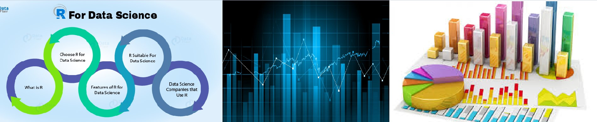

⭐ Prateek Anand ⭐
Hey there, I am Prateek Anand. I am a second-year undergraduate from SRM University pursuing my B.Tech in Computer Science and Engineering. I have a passion for coding in R and statistical data analysis. I love to solve the amazing mysteries of data, process and analyse them and present to people as an insights quisine. Presently, I am serving as the chief data analyst and dashboard manager in this team.
I believe that a good software is the best solution to a business problem, especially if it unravels data into pictographical informations. At SEPM_Titans, I along with my teammates try to find some really innovative and creative solutions through software and ideas. At the same time we also try to maintain a detailed documentation and to meet industrial standards as far as possible so that our end product is robust enough to satisfy our end users. Afterall, the pleasure of customers is the treasure of developers.😉
You may find me at: